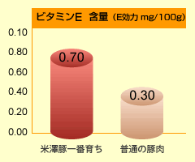

米澤豚一番育ち
おいしい！ヘルシー！米澤豚一番育ち
豚肉は、おいしい、値段も手頃、その上、ビタミン、ミネラル
豊富です。
お肉の消費量第一位で、「とんかつ」、「豚しゃぶ」
など年齢を問わず皆様に愛させております。
老化予防や疲労回復にも効果があると言われて
おり、女性にも人気があります。
当店ではそのような豚肉の中でも
「こだわりの豚肉=米澤豚一番育ち」を取り扱っております。
お中元、お歳暮、記念日の贈答用として、満足して頂ける一品です。
老化防止・美肌効果 ビタミンEをたっぷり
抗酸化作用のあるビタミンEは血行をよくしたり、美肌や若さを保つ働きがあるといわれています。また、豚肉そのものの酸化が抑制され鮮度も長く保たれ旨味が長持ちします。
①飼育環境へのこだわり
きれい好きな動物の豚は、清潔な豚舎づくりが最も重要なポイントです。女性スタッフによる、心配りのゆき届いた管理体制、清潔、消毒などに厳しい目を配り健康な豚に育てています。
女性特有の感性と優しい愛情で、ストレスを与えず穏和に育てることが、よい豚肉、おいしい肉づくりのポイントです。
②飼料へのこだわり
肉の甘みを引き出すトウモロコシ、麦類、ビタミンをたくさん含んだ海藻など、最高の肉質に仕上げるため、独自にブレンドしたこだわりの飼料で育てられています。
豚肉の質は、その豚が日々食べている飼料で決まるといっても過言ではありません。